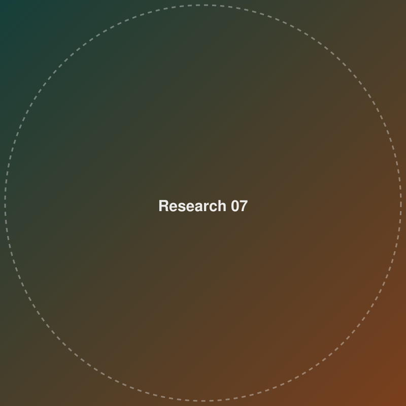
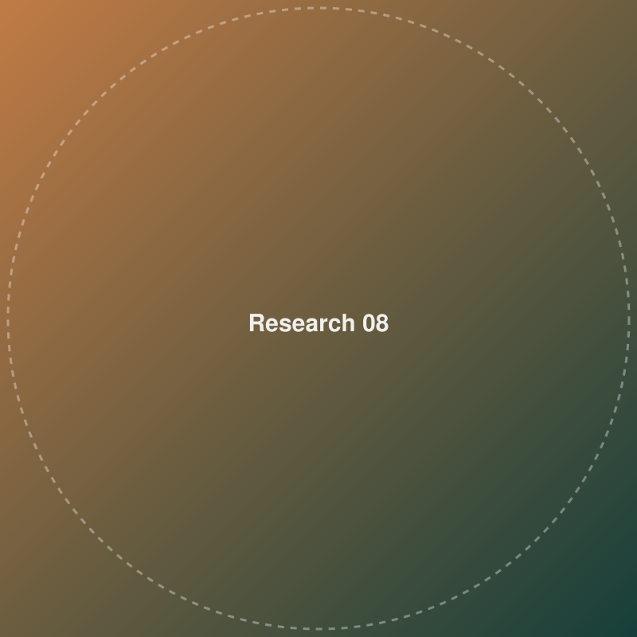

Metal Complexes & Nanomaterials
Synthesis and characterization of metal complexes, MOF materials, metal oxides/nanoparticles, and 1D/2D/3D materials.

Electrocatalysis & Sensing
Electrochemical sensing and electrocatalytic HER, OER, ORR, and PEM fuel cell applications.

Supercapacitors & Batteries
Energy storage device research spanning supercapacitors and batteries.

3D-Printed Bipolar Plates
Fuel cell bipolar plates fabricated by 3D printer.

Nanowire Synthesis & Patterning
Nanowire synthesis, patterning, and laser processing.

Electronic Device Fabrication
Fabrication of flexible and functional electronic devices.

Precision & Additive Manufacturing
CAD/CAM systems, precision machining, and additive manufacturing (3D printing).

Intelligent Manufacturing Systems
Machine vision, smart monitoring, and AI-driven manufacturing.